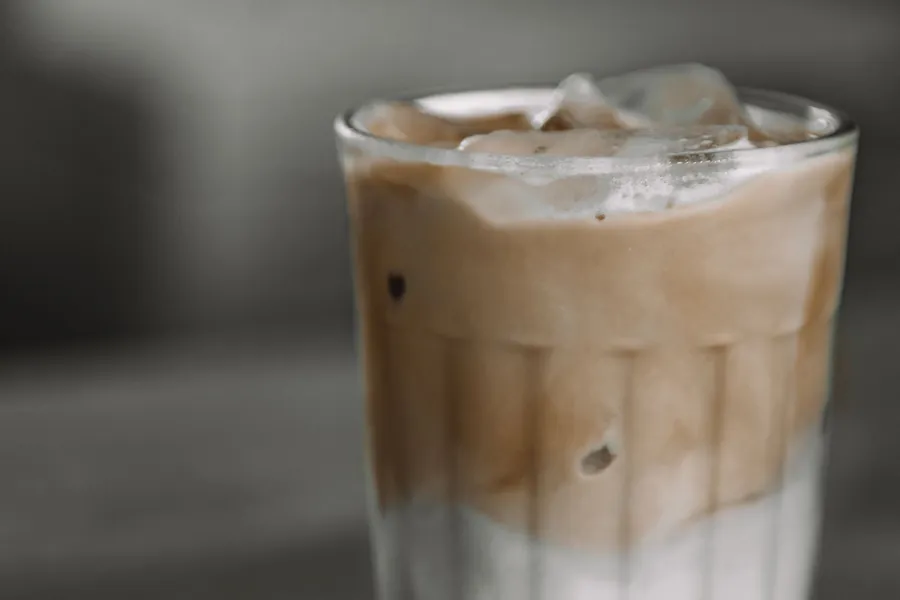
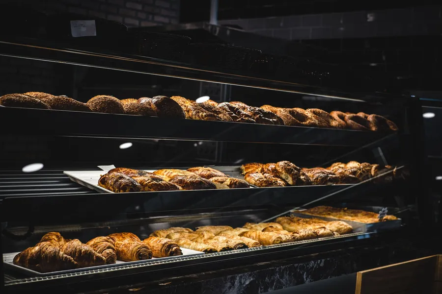

Event
Etkinlik ve özel gün
Doğum günü, buluşma ya da küçük bir kutlama için tarihinizi ve kişi sayınızı Instagram'dan yazın; Monaco size dönsün.
Talep yaz →
Monaco Coffee & Bakery, günlük 08.00-00.00 açık. Etkinlik ve özel gün talebinizi Instagram'dan yazın, yolu haritada açın.
Instagram öne çıkanlarınızdaki EVENT, DRINKS, MEKAN ve MONACO başlıklarını ziyaretçi tek bakışta bulsun diye bölümlere ayırdık. Ürün ve fiyatları sizinle birlikte ekleriz.
Doğum günü, buluşma ya da küçük bir kutlama için tarihinizi ve kişi sayınızı Instagram'dan yazın; Monaco size dönsün.
Talep yaz →
Kahveler, soğuk içecekler ve sıcaklar için kategori başlıkları. Ürün adları ve fiyatlar yayında sizden alınır.
Instagram'da gör →
Salon, vitrin ve fırın tezgâhı: gerçek fotoğraflarınız çekildikten sonra burada tam ekran durur.
Adres ve saat →Kınıklı çevresinde ders çıkışı ya da akşam buluşması arayan biri, "gece 00.00'a kadar açık" bilgisini ve yolu tek dokunuşla bulur.
Telefon numarası paylaşmıyorsanız bile misafir sizi bulur: sayfadaki her düğme doğrudan Instagram mesaj kutusunu açar.